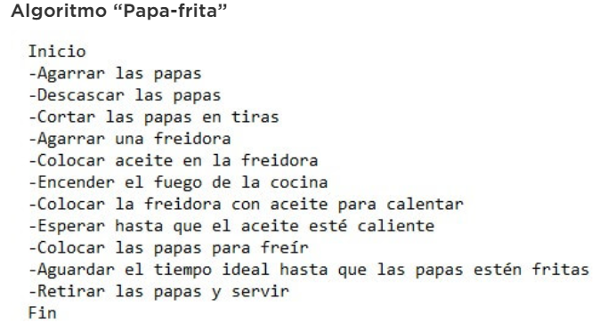

Algoritmo
El algoritmo es la propia secuencia de instrucciones para la ejecución de una tarea.
De una forma más simple, el algoritmo es una receta o ruta que indica todos los procedimientos necesarios para realizar algo o resolver un problema.
La información en un algoritmo no puede ser redundante o subjetiva. Tiene que ser clara y detallada para que la computadora interprete correctamente.
Ejemplificando mejor vamos a hacer un algoritmo para freír papas de una forma bien simple y didáctica. ¡Vamos!